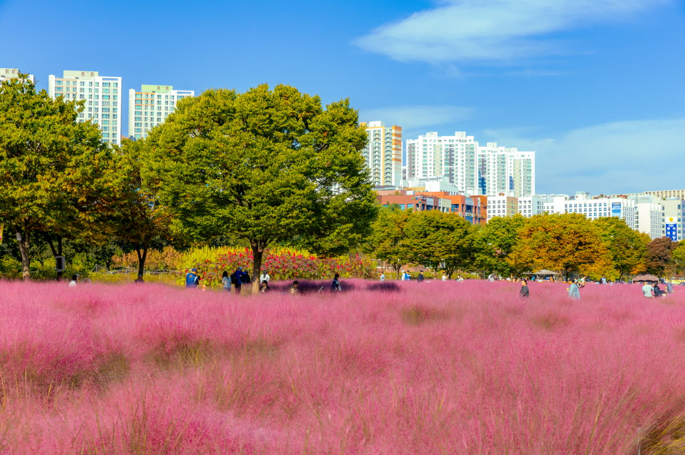

70호 | 2026년 11월 2일 발행
📌 이번 호 주요 목차
 우리동네 국회의원 이광재
우리동네 국회의원 이광재
📝 현장일지
이광재의원, 2027년도 예산안 공청회 시작 "나라는 부자인데, 왜 국민의 삶은 고단할까요?"
• 국회 예산결산특별위원회에서 2027년도 예산안 공청회 시작
• 테슬라 신형 로드스터 영상으로 회의를 열며 우리 자율주행차·드론·저궤도 위성 기술의 현주소 점검 필요성 제기
• 경제 규모 세계 12위지만 삶의 만족도는 OECD 38개국 중 33위, AI 혁명의 성과가 국민의 삶으로 돌아가야 한다고 강조
• 820조 원 예산·1,700조 원 연기금·3,800조 원 국가자산을 함께 살펴 미래 준비
• 여야가 서로 경청하고 지혜를 모으는 예결위 다짐
• 테슬라 신형 로드스터 영상으로 회의를 열며 우리 자율주행차·드론·저궤도 위성 기술의 현주소 점검 필요성 제기
• 경제 규모 세계 12위지만 삶의 만족도는 OECD 38개국 중 33위, AI 혁명의 성과가 국민의 삶으로 돌아가야 한다고 강조
• 820조 원 예산·1,700조 원 연기금·3,800조 원 국가자산을 함께 살펴 미래 준비
• 여야가 서로 경청하고 지혜를 모으는 예결위 다짐
📌 출처: 이광재 공식 네이버 블로그
📰 언론보도
[KBC] 이광재의원 "지금은 일해서 성과 낼 때… 생애기본자산으로 국민의 삶 지켜야"
이광재 국회 예결위원장이 1일 KBC '뉴스메이커' 인터뷰에서 "정권 1년 반, 지금은 일을 해서 성과를 내야 할 때"라며 계엄을 막아낸 국민에 대한 도리를 지켜야 한다고 강조했습니다. 광주·충청·용인의 반도체와 영남권 피지컬 AI를 반드시 성공시키겠다며, 예결위원장으로서 예산과 법률 통과에 힘쓰겠다고 밝혔습니다. 아이가 태어나면 1억 원 종잣돈을 국부펀드로 운용하는 '생애기본자산'과 지분적립형 주택 도입도 제안했습니다.
📌 출처: KBC광주방송 '뉴스메이커' (유재광 앵커)
📰 하남 지역 주요 뉴스
🚌 교통
하남~김포·인천공항 8849번 버스, 11월 1일부터 하루 6회→8회 증편… 야간 운행 추가
하남시가 1일부터 하남 원도심과 미사강변도시를 거쳐 김포·인천국제공항을 잇는 공항버스 8849번의 운행 횟수를 하루 6회에서 8회로 늘렸습니다. 운행 차량도 3대에서 4대로 증차됐습니다. 8849번은 하남BRT를 출발해 하남시청, 덕풍시장, 풍산초교, 미사역, 미사7단지 등을 거쳐 김포공항과 인천공항 제1·2터미널까지 운행합니다. 시는 배차간격이 줄고 야간 운행이 추가돼 공항 이용이 편리해질 것으로 기대하고 있습니다. 이현재 하남시장은 "교통 인프라 확충에 힘쓰겠다"고 말했습니다.
📌 출처: 서울파이낸스 (유원상 기자)
🏠 부동산
하남 아파트값 84주 연속 상승, 수도권 최장 기록… 전셋값도 동반 강세
한국부동산원의 10월 넷째 주 주간 아파트 가격 동향에서 하남시 아파트 매매가격이 84주 연속 올라 수도권 시·군·구 가운데 가장 긴 상승 기록을 세웠습니다. 전셋값도 장기 상승세를 이어가고 있습니다. 지하철 3호선·9호선 연장이 가시화되고 교산신도시 입주가 늦어지면서 기존 신도시로 실수요가 몰린 영향으로 분석됩니다. 전용 84㎡ 실거래가는 미사강변도시 13억 원 안팎, 감일지구 14억 원 선, 위례 하남권역 16억 원대입니다. 전문가들은 당분간 상승 흐름이 이어질 것으로 내다봤습니다.
📌 출처: 하남일보 (이재연 기자)
💬 하남 맘카페 HOT 이슈
이번 주 하남 지역 맘카페(미사맘스클럽, 정다운 감일맘, 하남맘 모여라, 교산라이프 등)에서 많이 오르내린 HOT 이슈 TOP 3입니다.
1️⃣ [축제] "불꽃놀이 대박이에요!"… '스테이지 하남!' 피날레 불꽃쇼에 미사호수공원 들썩
현황: 지난달 31일 미사호수공원에서 열린 '스테이지 하남!' 올해 마지막 정규 공연이 불꽃 퍼포먼스로 막을 내리자 후기가 쏟아졌습니다. 미사맘스클럽에는 "불꽃 딱 8시에 시작했네요, 호수에 비친 모습까지 멋졌다"는 사진 후기와 "하는 줄 몰랐는데 폭탄 소리에 놀라 내다보니 집이 명당이었다"는 글이 올라왔습니다. 반면 "공연은 5시 30분부터라는데 불꽃은 몇 시쯤이냐"며 시간표를 묻는 글, "불꽃놀이 홍보는 본 적이 없어 놓칠 뻔했다"는 글도 이어졌습니다. 다음 날 1일에는 같은 공원 계단광장에서 환경 캠페인과 아나바다 장터가 열려 아이와 함께 가 보자는 글이 공유됐습니다.
💡 주민 포인트: '스테이지 하남!'은 올해로 4년째 이어지는 하남시의 생활 속 공연 프로그램입니다. 카페에 공유된 글에 따르면 미사 일대에서는 11월 7일까지 매주 토요일 오후 2시 글로벌 K-POP 댄스 행사도 열립니다. 시간과 장소는 하남시·하남문화재단 공지를 미리 확인하세요.
💬 주민 반응: "너무 아름답고 낭만적인 가을밤"이라는 반응과 함께, 다음에는 미리 알고 가고 싶다며 행사 안내를 더 널리 해 달라는 의견이 많았습니다.
📌 출처: 네이버 카페 (미사강변도시 미사맘스클럽, 아이품애 하남맘)
2️⃣ [건강] "주변에 독감 걸린 사람만 4명"… 독감 유행에 예방접종·병원 정보 묻는 글 이어져
현황: "요즘 독감 유행인가 봐요, 벌써 주변에 독감 걸린 사람만 4명"이라는 글을 시작으로 아이 독감·코로나 경험담이 잇따랐습니다. 예방접종 재고와 가격을 비교할 수 있는 앱을 소개하는 글, 동네 병원 접종비가 2만 원대라는 제보, 국가검진 때 접종 할인을 받았다는 후기가 공유됐습니다. 중학생 자녀가 혼자 이비인후과에 갔다가 미성년자라 접종을 못 했다는 글과 초등생 독감 수액이 가능한 병원을 찾는 글도 올라왔습니다. 감일 카페에는 비용 안내 없이 독감·코로나 검사를 했다며 과잉진료 없는 병원을 추천해 달라는 글이 눈길을 끌었습니다.
💡 주민 포인트: 생후 6개월~13세 어린이, 임신부, 65세 이상 어르신은 지정 의료기관에서 독감 예방접종을 무료로 받을 수 있습니다. 미성년 자녀는 보호자 동반이나 동의서가 필요할 수 있으니 병원에 미리 확인하세요. 접종 가능한 병원은 질병관리청 '예방접종도우미' 누리집에서 찾을 수 있고, 고열이 이어지면 꼭 진료를 받으세요.
💬 주민 반응: "건강한 게 제일 중요하다"며 서로 조심하자는 댓글과 함께, 아이 접종 일정을 서둘러 잡겠다는 반응이 많았습니다.
📌 출처: 네이버 카페 (미사강변도시 미사맘스클럽, 하강맘, 정다운 감일맘, 아이품애 하남맘)
3️⃣ [입시 시즌] "우리 아이는 어느 고등학교가 맞을까요?"… 고교 입학설명회 후기 쏟아져
현황: 고교 입학설명회 시즌을 맞아 중3 학부모들의 후기가 잇따랐습니다. 하남미사교산4050 카페에는 미강고 설명회가 "생각보다 너무 좋았다"는 후기와 함께 하남고 설명회 자료, 신장고 2027학년도 교육과정 편성표가 공유됐습니다. "하남고는 걸어갈 수 있고 미사고는 버스를 타야 해 고민"이라는 글, 하남교육재단 진로·진학 컨설팅에 아이와 함께 다녀왔다는 후기도 올라왔습니다. 미사맘스클럽에서는 학교별 국어 시험 분석을 정리한 글이 관심을 모았고, 사립유치원 모집 요강의 우선순위를 묻는 글 등 어린 자녀 입학 준비 이야기도 이어졌습니다.
💡 주민 포인트: 학교마다 교육과정 편성(제2외국어, 공동교육과정 등)과 통학 거리가 다르니 설명회 자료를 나란히 놓고 비교해 보세요. 원서 접수 일정과 방법은 각 학교와 경기도교육청 공지를 꼭 확인하고, 하남교육재단의 진로·진학 컨설팅도 활용해 볼 만합니다.
💬 주민 반응: "학원 설명회만 다니다 학교 설명회는 처음 가 봤는데 도움이 됐다"는 반응과 함께, 아이 성향에 맞는 학교를 고르겠다는 댓글이 많았습니다.
📌 출처: 네이버 카페 (하남미사교산4050, 미사강변도시 미사맘스클럽)
🎭 ALL IN 하남라이프
2026년 11월 2일 기준 한눈에 보는 하남시 최신 문화·행사·교육 안내 가이드
🍂 미사경정공원 · 당정뜰 · 검단산 · 위례 · 파크골프장
[가을 나들이] 핑크뮬리부터 메타세쿼이아 숲길까지… 가을 나들이, 하남이 정답
"멀리 가지 않아도 괜찮아요 — 하남에서 즐기는 가을 명소 5곳"
꽃구경부터 단풍 산책, 맨발 황토길, 파크골프까지 하남 곳곳이 가을 나들이 명소로 주목받고 있습니다.
🌸 미사경정공원: 핑크뮬리 군락과 코스모스가 한창, 도심 가까운 출사지로 입소문
🌳 당정뜰 메타세쿼이아길: 덕풍교~산곡교 약 1.2km, 메타세쿼이아·낙우송 404그루가 만든 가을빛 터널
⛰️ 검단산 둘레길: 유길준묘 등산로 입구~캠프 콜번 인근 2.7km, 정상 등반 부담 없이 숲길 산책 · 초입에 맨발걷기길
👨👩👧 위례근린4호공원: 174m 사계절 맨발 황토길, 온수 세족장, 인공폭포, 어린이 숲속놀이터 (9월 우선 개방)
⛳ 당정근린공원 파크골프장: 미사동 18홀 · 12월 31일까지 무료 시범운영 · 동절기(11~2월) 오전 9시~오후 6시 · 월요일 휴장 · 하남도시공사 홈페이지에서 월 단위 예약
☎️ 문의: 하남도시공사 031-790-4803~4 (파크골프장)
꽃구경부터 단풍 산책, 맨발 황토길, 파크골프까지 하남 곳곳이 가을 나들이 명소로 주목받고 있습니다.
🌸 미사경정공원: 핑크뮬리 군락과 코스모스가 한창, 도심 가까운 출사지로 입소문
🌳 당정뜰 메타세쿼이아길: 덕풍교~산곡교 약 1.2km, 메타세쿼이아·낙우송 404그루가 만든 가을빛 터널
⛰️ 검단산 둘레길: 유길준묘 등산로 입구~캠프 콜번 인근 2.7km, 정상 등반 부담 없이 숲길 산책 · 초입에 맨발걷기길
👨👩👧 위례근린4호공원: 174m 사계절 맨발 황토길, 온수 세족장, 인공폭포, 어린이 숲속놀이터 (9월 우선 개방)
⛳ 당정근린공원 파크골프장: 미사동 18홀 · 12월 31일까지 무료 시범운영 · 동절기(11~2월) 오전 9시~오후 6시 · 월요일 휴장 · 하남도시공사 홈페이지에서 월 단위 예약
☎️ 문의: 하남도시공사 031-790-4803~4 (파크골프장)

📌 출처: 하남시청 보도자료 (공보담당관)
🛍️ 10.29(목) ~ 11.15(일) | 전국 · 온·오프라인 소비축제
[할인축제] '2026 코리아 그랜드 페스티벌' 개막… 농축수산물 최대 50% 할인·17억 원 상생소비복권
"김장철 장보기, 이번 축제 기간에 챙기세요"
정부 부처별 할인행사를 하나로 묶은 범정부 소비축제 '코리아 그랜드 페스티벌(코그페)'이 11월 15일까지 열립니다. 제조·유통·서비스 업계와 소상공인 등 약 4만 개사가 참여합니다.
🥬 장보기: 한우·수산물 등 농축수산물 최대 50%, 김장재료 40% 할인
🎟️ 상생소비복권: 디지털 온누리상품권 누적 결제액 3만 원당 응모권 1장(비수도권 결제 시 2장, 1인 최대 30장) · 5,600명 추첨, 총 17억 원
💳 온누리상품권: 11월 2일(월)~6일(금) 디지털 온누리상품권 할인율 상향
🏨 함께하는 행사: 숙박세일페스타, K-세일페스타, 동행축제, 대한민국 수산대전, 코리아듀티프리페스타 등
🏪 하남에서는: 11월 5일(목)부터 하머니 결제 시 5% 캐시백 (아래 공공기관 소식지 참고)
정부 부처별 할인행사를 하나로 묶은 범정부 소비축제 '코리아 그랜드 페스티벌(코그페)'이 11월 15일까지 열립니다. 제조·유통·서비스 업계와 소상공인 등 약 4만 개사가 참여합니다.
🥬 장보기: 한우·수산물 등 농축수산물 최대 50%, 김장재료 40% 할인
🎟️ 상생소비복권: 디지털 온누리상품권 누적 결제액 3만 원당 응모권 1장(비수도권 결제 시 2장, 1인 최대 30장) · 5,600명 추첨, 총 17억 원
💳 온누리상품권: 11월 2일(월)~6일(금) 디지털 온누리상품권 할인율 상향
🏨 함께하는 행사: 숙박세일페스타, K-세일페스타, 동행축제, 대한민국 수산대전, 코리아듀티프리페스타 등
🏪 하남에서는: 11월 5일(목)부터 하머니 결제 시 5% 캐시백 (아래 공공기관 소식지 참고)
📌 출처: 코리아 그랜드 페스티벌 공식 누리집 · 관련 보도 종합
🏛️ 공공기관 소식지
2026년 11월 2일 기준 하남시 공공기관 주요 공고·신청 안내입니다.
💳 하남시 지역경제과 | 11.5(목) ~ 11.15(일) · 예산 소진 시 마감
하머니로 결제하면 5% 돌려받는다 — 코리아그랜드페스티벌 하머니 캐시백 행사
"11월 5일부터, 하머니 결제액의 5%를 캐시백으로"
2026 코리아 그랜드 페스티벌 기간에 맞춰 하남시 지역사랑상품권 '하머니' 캐시백 행사가 열립니다. 하머니 전 가맹점에서 받을 수 있습니다.
🗓 기간: 2026년 11월 5일(목) ~ 11월 15일(일) 하머니 결제 시 (예산 소진 시 자동 종료)
💰 환급: 결제금액의 5%, 1인당 누적 1만 원까지
⏳ 사용기한: 지급일로부터 3개월 (결제 시 유효기간 짧은 순으로 먼저 차감)
⚠️ 유의: 본인 충전금으로 결제한 금액만 해당 (인센티브·정책수당 결제분 제외)
🔍 가맹점 조회: 경기지역화폐 앱 > 단골가게 > 경기지역화폐 결제 매장 찾기
☎️ 문의: 하남시 지역경제과 상권지원팀 031-790-5970
2026 코리아 그랜드 페스티벌 기간에 맞춰 하남시 지역사랑상품권 '하머니' 캐시백 행사가 열립니다. 하머니 전 가맹점에서 받을 수 있습니다.
🗓 기간: 2026년 11월 5일(목) ~ 11월 15일(일) 하머니 결제 시 (예산 소진 시 자동 종료)
💰 환급: 결제금액의 5%, 1인당 누적 1만 원까지
⏳ 사용기한: 지급일로부터 3개월 (결제 시 유효기간 짧은 순으로 먼저 차감)
⚠️ 유의: 본인 충전금으로 결제한 금액만 해당 (인센티브·정책수당 결제분 제외)
🔍 가맹점 조회: 경기지역화폐 앱 > 단골가게 > 경기지역화폐 결제 매장 찾기
☎️ 문의: 하남시 지역경제과 상권지원팀 031-790-5970
📌 출처: 하남시 (지역경제과)
© 2026 우리동네 진짜일꾼 이광재